The RCL series circuit can be used as a filter when the voltage across
all three components is the input and the voltage across any of the
three components is treated as output. Find the resonant frequency
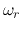 (at which the output is maximized) in terms of the natural
frequency
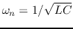, when (1) voltage  across C
is treated as output, and (2) voltage 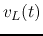 across L is treated as
output.
across C
is treated as output, and (2) voltage 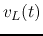 across L is treated as
output.
The frequency response functions 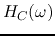 and 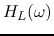
may have a peak, i.e.,
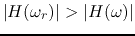 for any
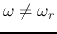, when is small enough, but it may not have such a
peak if is too large. Find the critical value 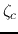 so
that for any 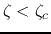 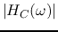 and 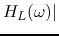 will
have a peak at
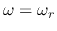, but such a peak no longer exist when
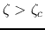.